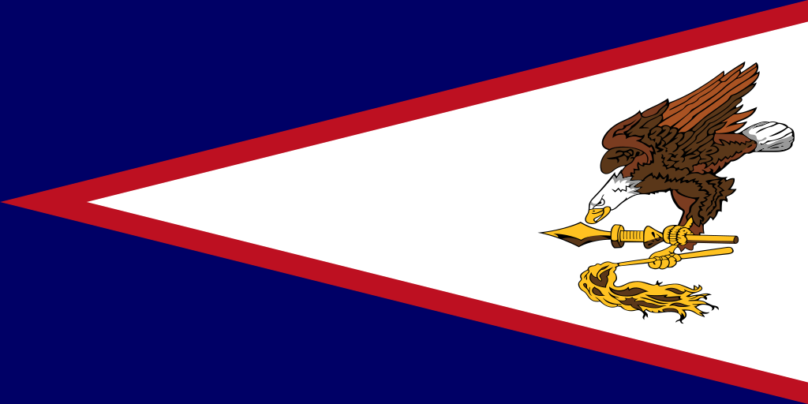

About Me
My name is Penina Fa'afiu and I have the craziest dream that one day I can be a web designer. I was born and raised in the Bay Area, California. My ethincity is Samoan and Tuvaluan, from the islands of American Samoa and Tuvalu. Both are beautiful islands in the Polynesian Triangle of the Pacific Ocean. In my spare time, I enjoy relaxing in nature or at home watching movies and eating snacks. Or i love the total opposite being out doors and end.


American Samoa has a tropical climate, with 90 percent of its land covered by rainforests. As of 2024, the population is approximately 47,400 and concentrated on Tutuila, which hosts the capital and largest settlement, Pago Pago. The vast majority of residents are indigenous ethnic Samoans, most of whom are fluent in the official languages, English and Samoan. (Reference: https://en.wikipedia.org/wiki/American_Samoa)